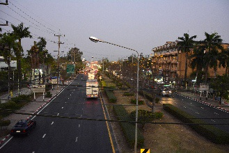
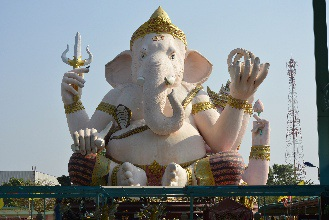
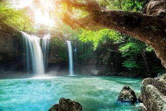
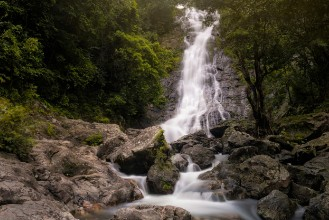
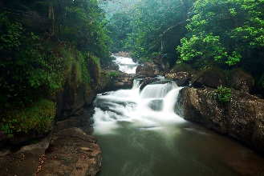

Nakhon Nayok (นครนายก)
 A cidade é um destino turístico não muito longe de Bangcoc, e fica movimentada durante a alta temporada.É conhecida por suas cachoeiras e sua variedade de frutas.
Acredita-se que a área de Ban Dong Lakhon, situada ao sul da atual cidade, era um assentamento Dvaravati, e que a cidade tenha sido fundada por volta do Século XI.
O nome Nakhon Nayok foi definido em 1350, quando a cidade se tornou um quartel do reino de Ayutthaya, protegendo a fronteira do leste.
No passado a cidade se chamava Ban Na (vila dos campos de arroz).
Assume-se que no período Ayutthaya, Nakhon Nayok era apenas uma planície com florestas, onde se plantavam muitas frutas. Como algumas doenças apareceram em virtude da floresta próxima, as pessoas migraram para outros lugares, deixando a área quase deserta.
A notícia da saída das pessoas chegou ao rei, que ordenou que os impostos sobre os arrozais fossem aumentados, para encorajar as pessoas a desistirem de partir, o que funcionou, além de incentivar as pessoas da região a migrarem para a cidade. Depois disso, a área virou uma grande comunidade.
Em 1894, sob ordens do rei Rama V, a cidade foi designada parte da província de Prachin Buri.
Eventualmente esta província ganhou uma capital de mesmo nome.
Em 2006 a cidade tinha uma população de 17.385 pessoas.
Como chegar à Nakhon Nayok
* De carro: a cidade fica a 2h de carro de Bangcoc, e pode ser alcançada por 2 caminhos: 1-) dirigindo pela Rodovia 305, ao lado do canal Rangsit, passando pelo Amphoe (cidade) de Ongkharak. Essa rota tem uns 107km. 2-) seguindo pela Rodovia 1, vire à direita em Hin Gong, e então siga pela Suwannason Road (Rodovia 33). Essa rota tem cerca de 137km.* De ônibus: a Transport Co. Ltd. (Bo Kho So) opera ônibus diários saindo do Northern Bus Terminal de Bangcoc, na Kamphaengphet 2 Road. Há 2 rotas: Bangkok-Hin Kong-Nakhon Nayok e Bangkok-Rangsit-Ongkharak-Nakhon Nayok. Além dessa opção há ônibus de 2ª classe com ar condicionado fazendo o trajeto Bangkok-Ongkharak-Chulachomklao Royal Military Academy, que passam por Nakhon Nayok.
* De minivan: há minivans por ฿$ 180 na mini estação próxima ao Victory Monument (sai de hora em hora, das 5:30 às 19:30), ou um ônibus por uns ฿$ 160 na Estação Ekkamai.
Se locomovendo pela cidade
Há tuk-tuks, e a maioria se encontra na rodoviária da cidade. Para mais informações, contate a Tourism Authority of Thailand de Nakhon Nayok, localizada na prefeitura.
Parque de Ganesha (Ganesha Park)
Parque inaugurado em 2008, que é um impressionante tributo ao deus hindu Ganesha. O projeto foi iniciado pelo monge Luang Por, de Bangcoc, que doou o terreno para
a construção de um local para a adoração tanto de Buda quanto de Ganesha, que embora seja um deus hindu, possui vários seguidores na Tailândia.
Na verdade há várias ideias similares entre o hinduismo e o budismo theravada, com ambas as religiões acreditando no conceito da reencarnação, o ciclo da vida, morte e renascimento.
Segundo a crença hindu, Ganesha, é o removedor de obstáculos e o senhor do aprendizado.
Em tailandês ele é chamado de Phra Pikanet. Ele possui uma cabeça de elefante com apenas um dente (o outro foi arrancado). Já foi representado com um número variável de braços.
As 2 imagens do parque, as maiores da Tailândia, o representam com 4 braços.
A primeira o representa sentado, e tem 15m de altura por 9 de largura. Ele segura seu dente quebrado em uma mão. Nas outras mãos ele tem um gancho de mahoot (treinador de elefantes), um nó de corda e um rosário hindu.
Em frente ao Ganesha sentado há um rato. Os hindus acreditam quem ele use ratos como um veículo de comunicação com seus seguidores. É por isso que você vê fiéis sussurando no ouvido do rato.
A 2ª imagem, de Ganesha deitado, foi inaugurada em 2010 e mede 9m de altura por 15m de largura. Nesta imagem ele tem uma naja ao redor do pescoço, com sua cabeça sobre a barriga de Ganesha.
Novamente ele segura seu dente quebrado em uma das mãos, além de um broto de lótus e um símbolo em sânscrito na palma de uma das mãos.
O parque possui também um jardim, alguns belos santuários e um pequeno museu.
Na verdade há várias ideias similares entre o hinduismo e o budismo theravada, com ambas as religiões acreditando no conceito da reencarnação, o ciclo da vida, morte e renascimento.
Segundo a crença hindu, Ganesha, é o removedor de obstáculos e o senhor do aprendizado.
Em tailandês ele é chamado de Phra Pikanet. Ele possui uma cabeça de elefante com apenas um dente (o outro foi arrancado). Já foi representado com um número variável de braços.
As 2 imagens do parque, as maiores da Tailândia, o representam com 4 braços.
A primeira o representa sentado, e tem 15m de altura por 9 de largura. Ele segura seu dente quebrado em uma mão. Nas outras mãos ele tem um gancho de mahoot (treinador de elefantes), um nó de corda e um rosário hindu.
Em frente ao Ganesha sentado há um rato. Os hindus acreditam quem ele use ratos como um veículo de comunicação com seus seguidores. É por isso que você vê fiéis sussurando no ouvido do rato.
A 2ª imagem, de Ganesha deitado, foi inaugurada em 2010 e mede 9m de altura por 15m de largura. Nesta imagem ele tem uma naja ao redor do pescoço, com sua cabeça sobre a barriga de Ganesha.
Novamente ele segura seu dente quebrado em uma das mãos, além de um broto de lótus e um símbolo em sânscrito na palma de uma das mãos.
O parque possui também um jardim, alguns belos santuários e um pequeno museu.

Local: saia de Nakhon Nayok à oeste pela rodovia 3049 por aproximadamente 6km, e vire à esquerda no sinaleiro. Aí não tem como errar. Para
chegar à Nakhon Nayok você pode pegar uma minivan por uns ฿$ 180 na mini estação próxima ao Victory Monument (sai
de hora em hora, das 5:30 às 19:30), ou um ônibus por uns ฿$ 160 na Estação Ekkamai.
Voltar à lista
Parque Nacional Khao Yai
O mais antigo parque nacional do país, e um dos maiores.
Khao Yai significa grande montanha, em referência à Cordilheira Dongrak que forma parte da fronteira entre Tailândia e Camboja.
O parque fica no território de 4 províncias: Nakhon Ratchasima, Prachin Buri, Nakhon Nayok e Saraburi.
O pico mais alto é de 1.351m, chamado Khao Rom.
No parque você encontra mais de 25 espécies de mamíferos, mais de 300 de aves e mais de 5000 espécies de borboletas.
Khao Yai significa grande montanha, em referência à Cordilheira Dongrak que forma parte da fronteira entre Tailândia e Camboja.
O parque fica no território de 4 províncias: Nakhon Ratchasima, Prachin Buri, Nakhon Nayok e Saraburi.
O pico mais alto é de 1.351m, chamado Khao Rom.
No parque você encontra mais de 25 espécies de mamíferos, mais de 300 de aves e mais de 5000 espécies de borboletas.

Cachoeira Sarika
Cachoeira mais famosa de Nakhon Nayok, no tambon (sub distrito) Sarika.
A cachoeira cai em 9 níveis, o mais alto há 200m de altura.
A cachoeira cai em 9 níveis, o mais alto há 200m de altura.

Como chegar: pegue a Highway 3049 desde Bangcoc, siga 12km, vire à esquerda na Highway 3050 e siga mais 3km.
Cachoeria Nang Rong
Cachoeira que nasce em uma montanha no parque, e desce vários níveis em formações rochosas, seguindo pela mata.
